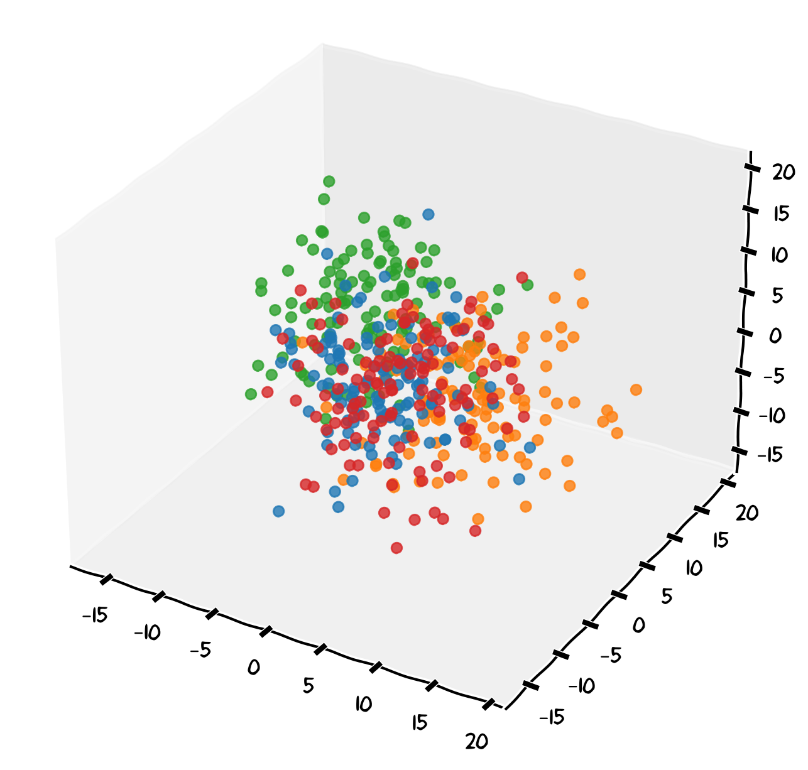

Context matters
- Context is all the information you give LLMs to understand your request (role, purpose, audience, requirements)
- Be specific, not vague - Clear context gets relevant responses; vague prompts get generic ones
- Refine iteratively - Start basic, review output, add details, repeat until satisfied
- Never share sensitive data - No personal records, unpublished research, or confidential information
Large Language Models work by navigating through vast embedding spaces—multidimensional representations of knowledge and concepts. Vague or poorly defined context can lead the model to explore irrelevant areas of this space, producing generic or off-target responses. Well-crafted context act as precise navigation instructions, guiding the model to the most relevant knowledge areas and ensuring outputs that match your specific needs and context.

Why Context Matters for LLMs
Context is everything you provide to an LLM to help it understand your request and generate appropriate responses during your chatbot session. Without proper context, LLMs often produce generic, inaccurate, or inappropriate outputs.
Because LLMs have no memory between separate sessions, they have no inherent knowledge about who you are, your organization’s policies or the purpose of your request.
Example of poor context
Write me a report about productivity
Example of better context
I am a manager at the North Bristol NHS Trust. I have to write a 2-page executive summary about remote work productivity for the Senior Management Team, focusing on evidence-based strategies and including practical implementation steps.”
Note that while LLMs have no memory between separate chat sessions and don’t retain information from previous conversations, the data you share within each individual session may still be stored by the service provider. Always follow University’s data protection policies when sharing any information.
Independently of the prompting framework you are using, never share these with unapproved or general-purpose AI tools:
🚫 Personal Identifiable Data (PID): Patient medical records, health status, NHS numbers, or staff personal files.
🚫 Sensitive Clinical Information: Diagnostic scans, consultation transcripts (from AI Scribes), or unverified discharge summaries.
🚫 Confidential Medical Research: Unpublished clinical trial findings, grant applications under review, or proprietary drug discovery data.
🚫 Commercially Sensitive Data: Trust procurement contracts, vendor partnership agreements, or financial budgets.
🚫 Legal & Security Sensitive: Legal advice regarding clinical negligence, disciplinary proceedings, passwords, or system access credentials.
Types of Context
Explicit Context. Information you directly provide to the LLM, for example:
- Your role and organization
- The purpose of the task
- Target audience
Implicit Context. Assumptions the LLM makes based on your prompt, for example:
- Cultural assumptions
- Educational level expectations
- Language formality
Instead of assuming the LLM will understand your context, state it clearly:
Instead of
Help me write an application for a fellowship
Try
I am a Specialty Registrar in cardiology applying for a MRC Clinical Research Training Fellowship. Help me draft a 3‑page Case for Support and a 1‑page Training & Development Plan tailored to this scheme.
Working Within Context Limits
LLMs have context windows, limits on how much text they can process at once or over different iterations. Some practical strategies to overcome this limitation are:
- Summarize lengthy background information and prioritize the most important context
- Break complex tasks into smaller parts
- Use previous outputs as context for follow-up requests
Iterative Context Building
We will not always get what we want at the first attempt. A useful strategy is starting with basic context and refine:
- Initial request: Provide core context
- Review output: Identify what’s missing or wrong
- Refine context: Add specific details or corrections
- Iterate: Repeat until satisfactory
Exercise 2: Context Writing
Transform a vague prompt into an effective, contextualised request. Use an AI tool of your choice to observe the difference that context have on your request.
Scenario: You are a specialist registrar drafting a patient letter based on clinical notes.
Initial prompt
Write a letter to explain a medical condition and treatment
Social History
Non-smoker, alcohol 6-8 units/week. Works as secondary school teacher. Lives with husband and two teenage children.